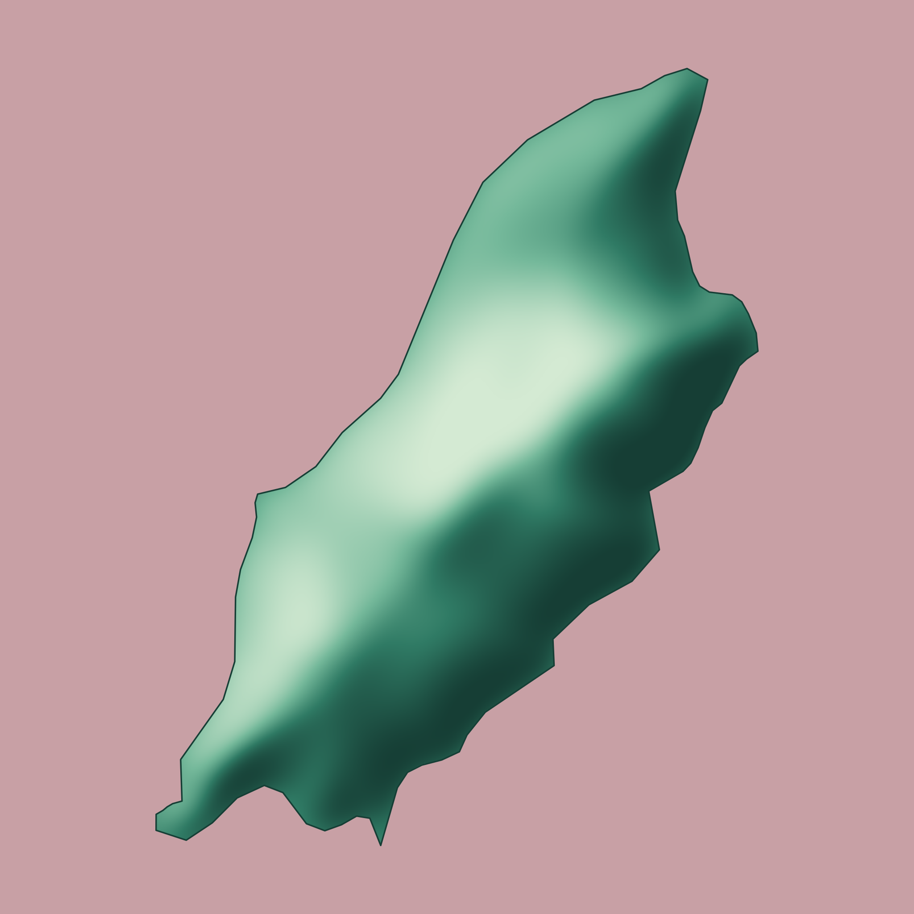
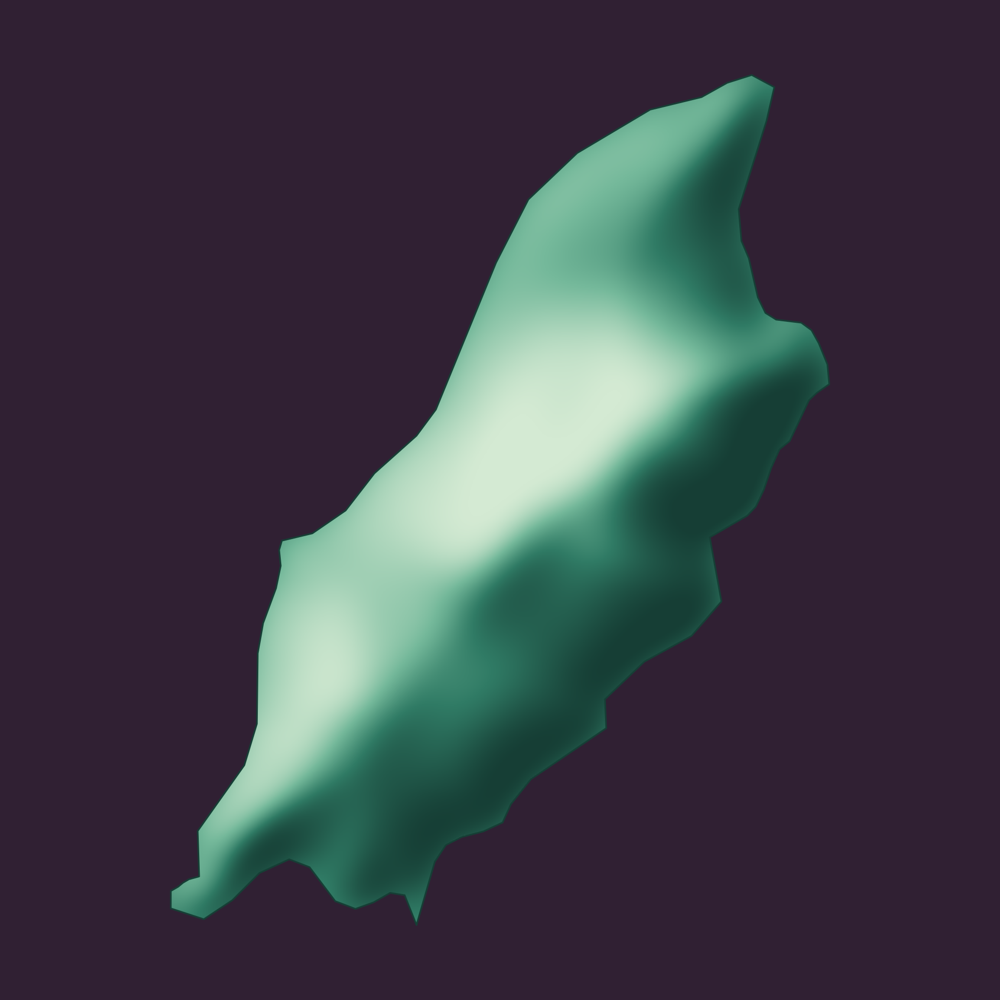
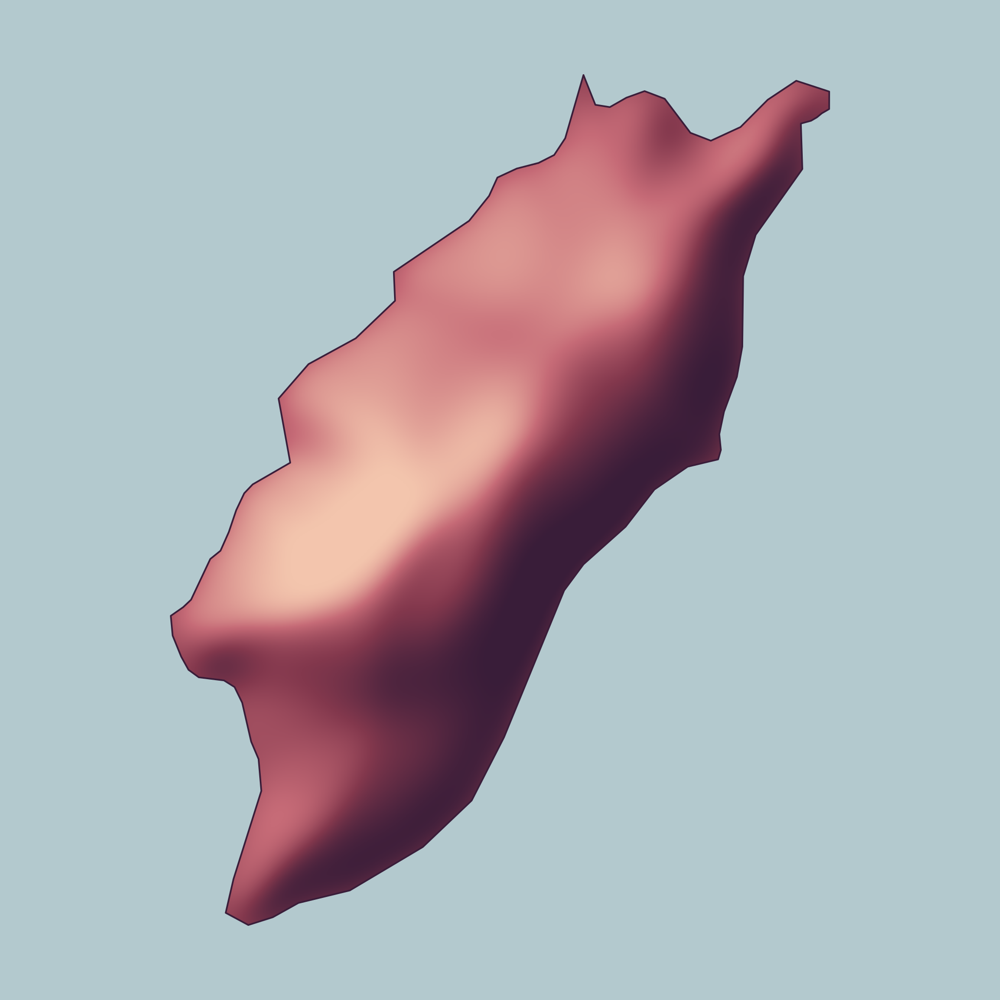
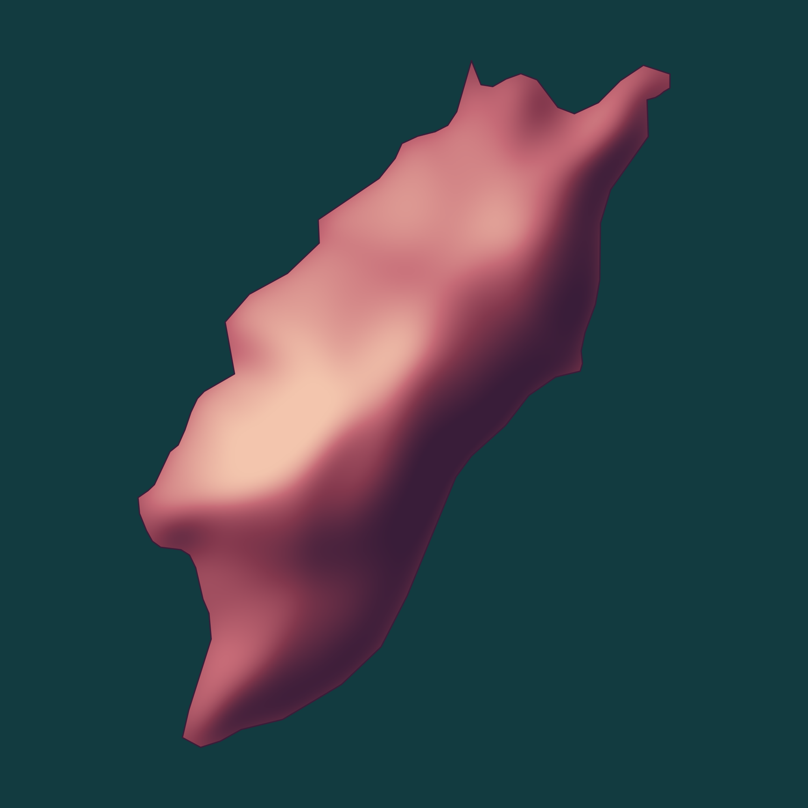

<!doctype html><html lang="en"><meta charset="utf-8"><meta name="viewport" content="width=device-width,initial-scale=1"><title>ISLANDS 000011 — Background studies</title><style>*{box-sizing:border-box}body{margin:0;padding:16px;background:#141414;color:#eee;font:14px monospace}h1{font-size:20px;margin:0 0 18px}main{max-width:1100px;margin:auto}.grid{display:grid;grid-template-columns:repeat(2,minmax(0,1fr));gap:12px}figure{margin:0}img{display:block;width:100%;height:auto}figcaption{padding:8px 0 16px;line-height:1.5}a{color:inherit}</style><main><h1>ISLANDS #000011 — Isle of Man</h1><div class="grid"><figure><a href="000011-N-draft.png"></a><figcaption>North-Up · Celtic Malachite<br>Heather Rose</figcaption></figure><figure><a href="dark/000011-N-draft.png"></a><figcaption>North-Up · Celtic Malachite<br>Black Plum</figcaption></figure><figure><a href="000011-S-draft.png"></a><figcaption>South-Up · Royal Garnet<br>Irish Sea Mist</figcaption></figure><figure><a href="dark/000011-S-draft.png"></a><figcaption>South-Up · Royal Garnet<br>Deep Petrol</figcaption></figure></div></main></html>